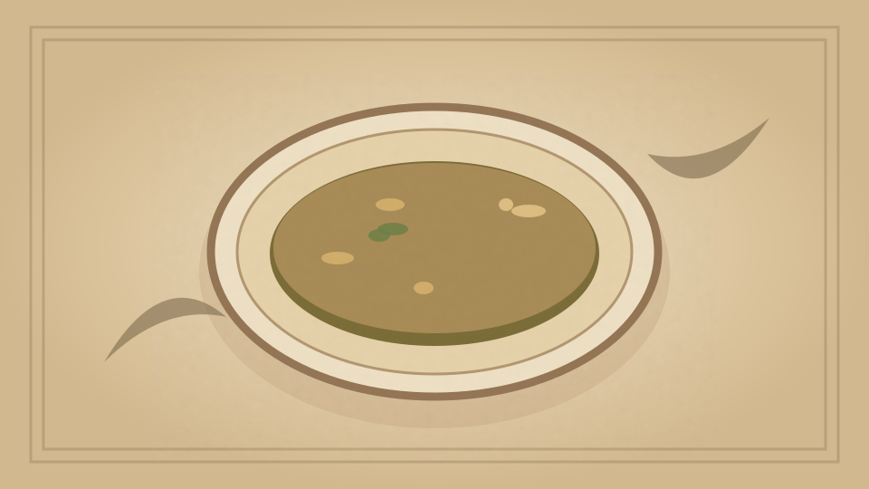

1910 · Fannie Merritt Farmer · SOUPS
Clam and Oyster Soup
The Boston Cooking-School Cook Book

Historical Recipe
The following text is extracted from the 1910 edition, retaining historical terminology and quantities.
Original Ingredients & Directions
1 pint clams
1 pint oysters
4 cups milk
1 slice onion
2 blades mace
Sprig of parsley
Bit of bay leaf
⅓ cup butter
⅓ cup flour
Salt and pepper
Clean and pick over oysters, using one-third cup cold water; reserve liquor, and add oysters slightly chopped. 132 Clean and pick over clams, reserve liquor, and add to hard part of clams, finely chopped; put aside soft part of clams. Heat slowly to boiling-point clams and oysters with liquor from both, let simmer twenty minutes and strain through cheese-cloth. Scald milk with onion, mace, parsley, and bay leaf; remove seasonings, and add milk to stock. Thicken with butter and flour cooked together, add soft part of clams, and cook two minutes. Season with salt and pepper.
Automatically extracted transcription; editorial verification pending. Historical instructions may not meet modern food-safety standards.